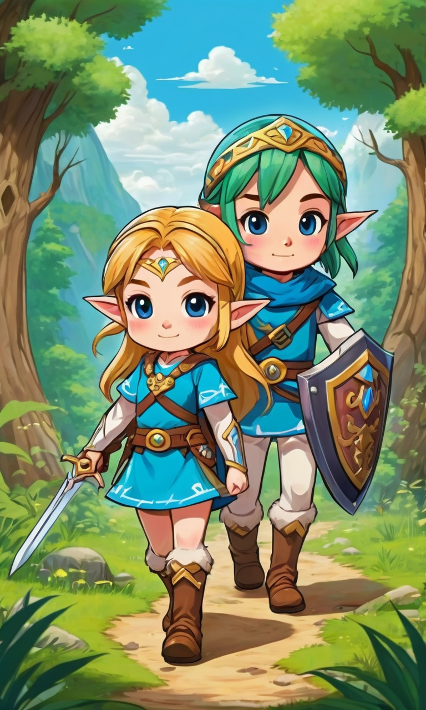
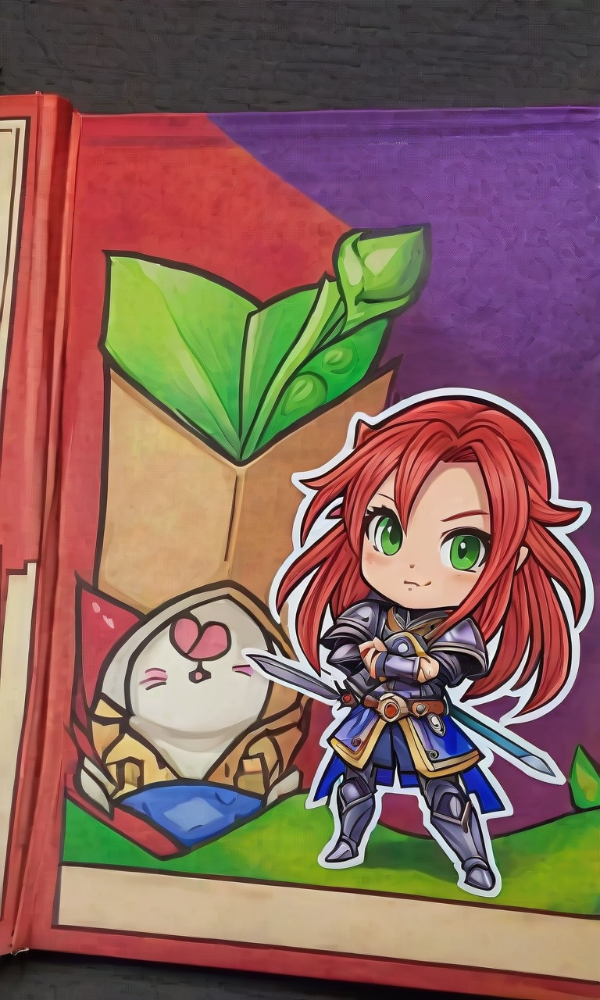
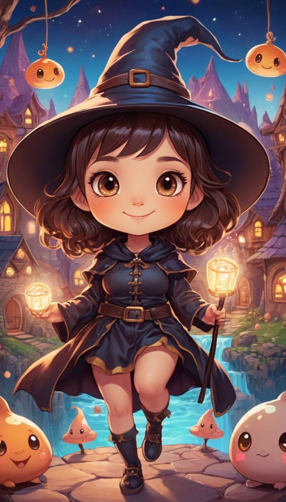
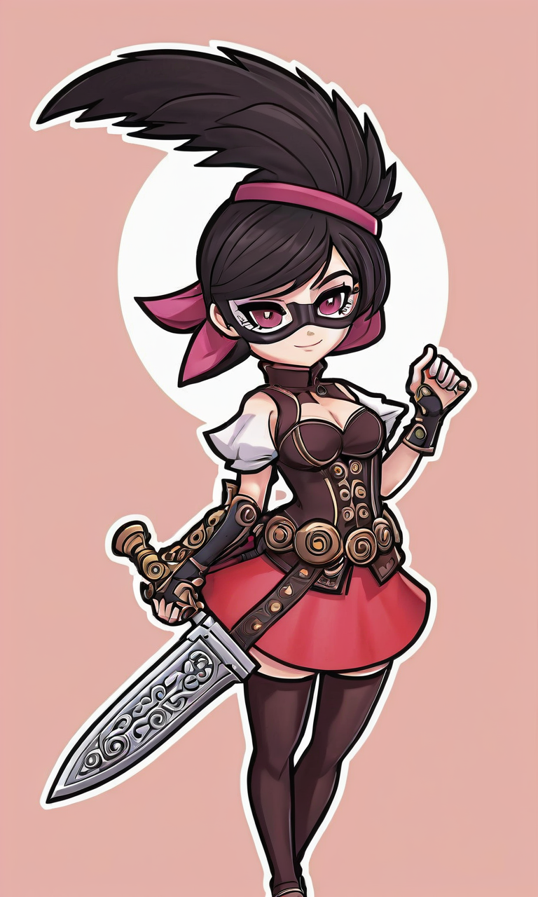
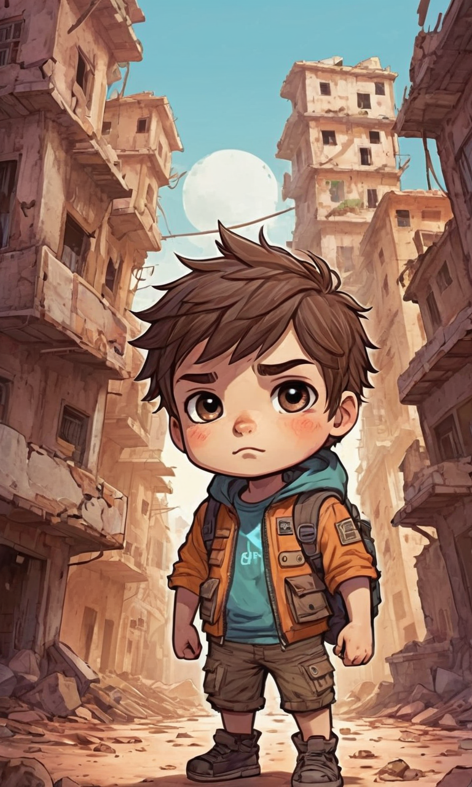
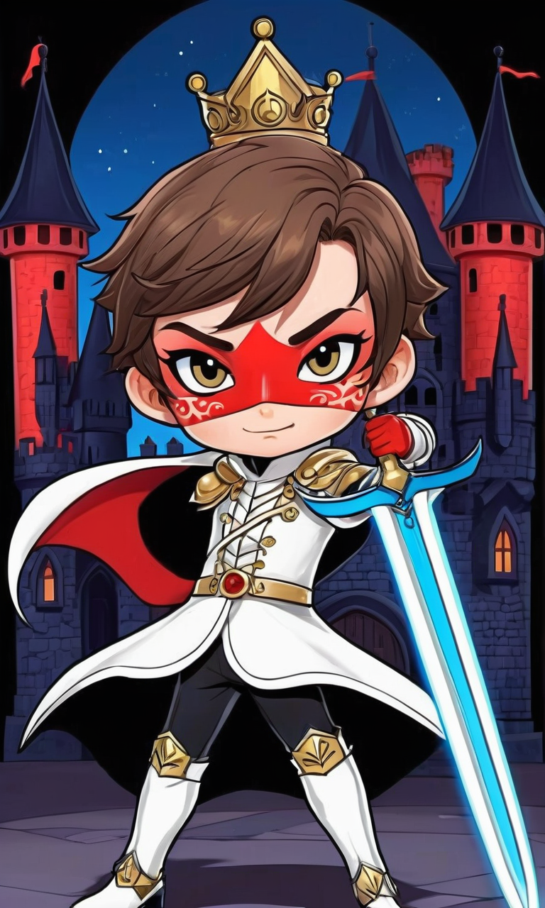
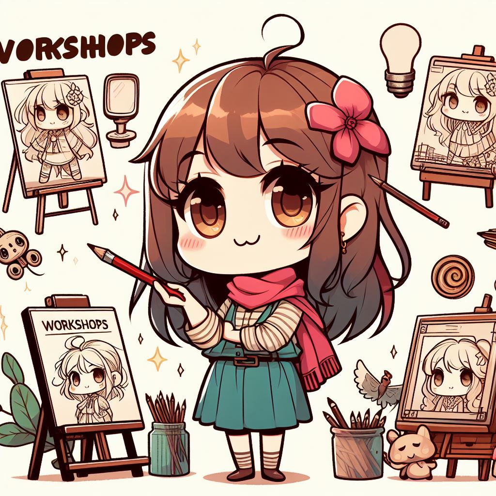
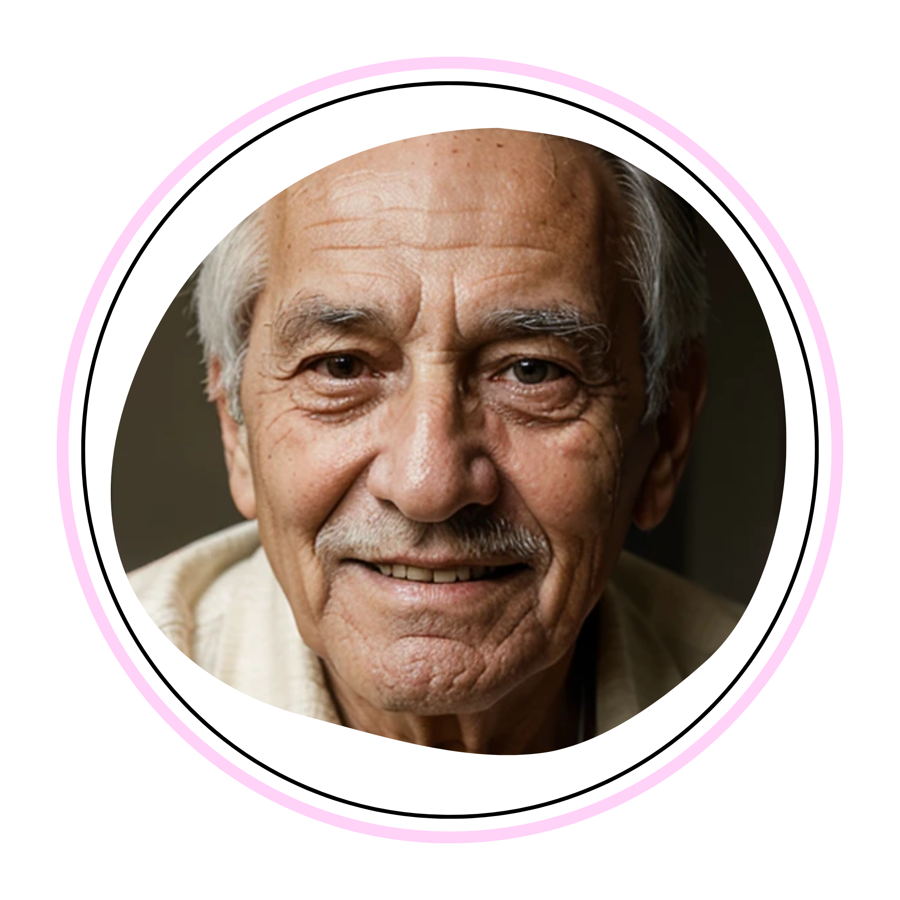

Sobre mi:¡Hola! Soy Jeza, una ilustradora profesional, digital y editorial. Mi estilo es una mezcla de chibi, anime y colores vivos. Me apasionan los dibujos que expresan ternura y calidez, y utilizo mis ilustraciones tanto en cuentos infantiles como en colaboraciones para videojuegos. La fusión de lo medieval con lo moderno es algo que me inspira e incorporo en mi estilo de diseño. Creo que todos pueden aprender a dibujar y encontrar su propia personalidad artística así como yo lo hice. Por eso, imparto talleres y guías para niños y jóvenes adultos que recién comienzan en el mundo del dibujo. Ayudarlos a descubrir su propia identidad es mi objetivo. Mi sueño es tener mi estudio de ilustración con una escuela incorporada. Quiero crear un espacio donde cualquiera pueda aprender a expresarse mediante el arte. Acompáñame a ver mi mundo y a conectar desde Argentina hasta donde estés mientras conoces mi trabajo. ¡Gracias por visitar mi sitio! |
Mi Misión
📝Misión: Mi misión es fomentar la creatividad y la expresión personal a través del arte. Me dedico a inspirar y educar a artistas emergentes de todas las edades, proporcionando un espacio acogedor donde puedan aprender, experimentar y desarrollar su propio estilo artístico. Mi compromiso es con el arte que toca el corazón, que trae calidez y alegría a través de colores vivos y diseños que despiertan la imaginación.
📝Visión: Mi visión es ser un estudio de ilustración reconocido y una escuela de arte integral que sea un referente en la comunidad artística, tanto local como internacionalmente. Aspiro a ser un puente entre lo clásico y lo contemporáneo, donde la tradición y la innovación se encuentren para crear una experiencia de aprendizaje única. Sueño con un futuro donde Jezart sea sinónimo de excelencia en el arte digital y editorial, y donde mis estudiantes se conviertan en los artistas influyentes del mañana.
📝Valores: Pasión: Creo en el poder del arte para mover el alma y me apasiona cada proyecto y enseñanza que emprendo. Innovación: Estoy comprometida con la exploración de nuevas técnicas y estilos, manteniéndome siempre a la vanguardia del arte digital. Calidez: Mi enfoque es crear un ambiente de apoyo y amistad, donde cada estudiante se sienta valorado y motivado. Excelencia: Me esfuerzo por la calidad en cada ilustración y clase que ofrezco, asegurando que mis estudiantes reciban la mejor educación artística posible. Comunidad: Valoro la colaboración y el intercambio de ideas, construyendo una comunidad artística sólida y diversa.
Mi Portfolio:
|  |  |  |  |  |  |
Servicios:
🎨Ilustración en formato digital:Ilustración en formato digital de 1 (un) personaje a elección con fondo.Precio: 15000 Ars o 15 U$D |
🎨Ilustración en papel:Ilustración en papel de 1 (un) personaje a elección con fondo en formato A4.Precio: 20000 Ars o 20 U$D |
|  |
Talleres:En este taller, te invito a unirte a mí en un viaje de descubrimiento y creatividad. Como ilustradora profesional, he tenido la oportunidad de explorar muchos estilos y técnicas diferentes, y estoy emocionada de compartir lo que aprendí con vos. No importa si estás recién comenzando tu viaje artístico o si ya tenés experiencia, hay un lugar para vos. Juntos, vamos a explorar desde los conceptos básicos de la ilustración, como el dibujo de formas y el uso del color, hasta técnicas más avanzadas, como la creación de texturas y la representación de la luz y la sombra. Además de las técnicas de ilustración, también te ayudaré a desarrollar tu propio estilo único. Creo firmemente que cada artista tiene algo único que aportar, y una de las partes más gratificantes de la enseñanza para mí es ayudar a los estudiantes a descubrir y desarrollar su propia voz artística. Pero este taller no es solo sobre aprender técnicas y desarrollar habilidades. También es sobre la diversión y la alegría de crear. Ya sea que estés dibujando un retrato detallado o simplemente garabateando por diversión, hay una gran satisfacción en crear algo que es verdaderamente tuyo. Así que, si estás listo para sumergirte en el mundo del arte y unirte a mi taller, por favor contactame. No puedo esperar para ver lo que vamos a crear juntos. ¡Vamos a hacer algo increíble! |
Testimonios

★★★★★ Compré una ilustración impresa para el cumpleaños de mi hija, La calidad de la impresión es excelente, con colores vibrantes que realmente hacen que las imágenes cobren vida. Mi hija la adora y la colgamos en su habitación. Ella se ve a sí misma en estos personajes y se siente inspirada por sus aventuras. Como madre, no puedo pedir más. Recomiendo encarecidamente las ilustraciones de esta artista a cualquier padre que quiera alimentar la imaginación de sus hijos y fomentar un amor por la lectura. |
★★★★★ Siempre he querido aprender a dibujar, pero nunca supe por dónde empezar. Una amiga me sugirió este taller y fue la introducción perfecta al mundo de la ilustración. La instructora es muy paciente y explica las cosas de una manera que es fácil de entender, incluso para un principiante total como yo. Me sorprendió lo mucho que pude aprender en tan poco tiempo, e incluso descubrí una creatividad que no sabía que tenia. Estoy emocionado de seguir practicando y mejorando. ¡No dudes en inscribirte tal como hice yo! |

★★★★★ A mis 80 años, nunca pensé que compraría algo por Internet, a pesar de no entender mucho de tecnología, el proceso de pedido y compra fue muy fácil. Me impresionó lo sencillo que fue. Cuando la ilustración llegó, quedé asombrado. La imagen de mi hija con su perrito era perfecta, capturando su espíritu y la alegría que comparten. Estoy muy agradecido por la habilidad de esta artista para capturar momentos tan preciosos. Recomiendo sus ilustraciones a cualquiera que busque un regalo único y personal. |
★★★★★ Buscaba nuevas formas de expandir mis habilidades y nuevos horizontes. Este taller fue lo que buscaba. La instructora es increíblemente talentosa y su pasión por la ilustración es contagiosa. Aprendí nuevas técnicas y enfoques que han enriquecido mi trabajo y me han dado una nueva perspectiva. Además, el ambiente del taller es muy acogedor y colaborativo, lo que hizo que la experiencia fuera aún más gratificante. Recomiendo este taller a cualquier ilustrador que busque crecer y aprender en un ambiente de apoyo |
Contacto:
|